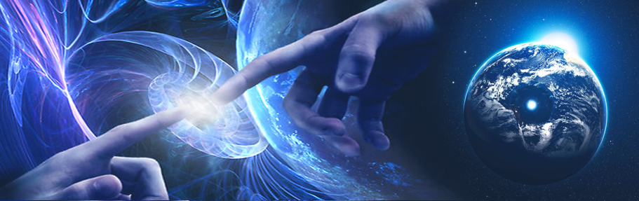
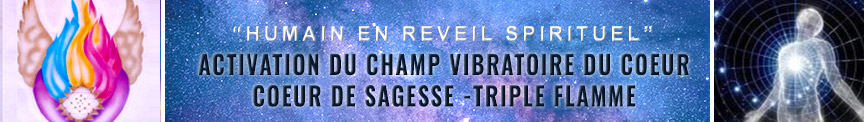

Coaching d'éveil multidimensionnel

ÉVEIL ASCENSIONNEL & MULTIDIMENSIONNEL : Un coaching d’Éveil multidimensionnel pour ascensionner la conscience vers la 5ème dimension et la Présence Je Suis / I am
Sommes-nous des humains en questionnement sur des sujets spirituels ou bien des Êtres d'Essence Divine en expérience sur Terre ? That is the question ! > Voir Une Nouvelle Ère
Ce processus d'éveil ascensionnel et multidimensionnel vous conduit à l'intégration progressive d'un État d’Être de plénitude, de créativité et de Sagesse de type 4D permettant de déployer votre conscience vers la 5ème Dimension à partir de sauts quantiques et de connaitre des moments de connexion et d'éveil avec votre "PRÉSENCE JE SUIS". Cliquer sur le cadre.
1 – Phase d'Activation du champ vibratoire du cœur

2 – Phase d'Intégration des codes ascensionnels 4D/5D

3 – Phase d'Apprentissage des Rayons portes d'accès au Soi
Cette partie de nous dite spirituelle jusqu'alors révélée chez les « mystiques », est aujourd'hui reconnue par des médecins, des professeurs ou des journalistes. Ayant vécu des expériences personnelles d'expansion de conscience révélatrices de la délocalisation de la conscience par rapport au cerveau, ceux-ci osent aujourd’hui parler de la vie après la mort ou de la partie de notre conscience sage et intemporelle : l’Âme ou la Présence Divine.
Ceci vous interpelle....... Vous souhaitez aller encore plus loin et découvrir d'autres facettes multi dimensionnelles de vous même ….. Alors Rendez vous sur le site d'à coté : EVEIL AU SOI